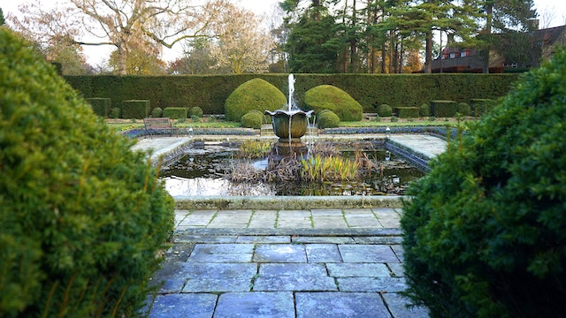
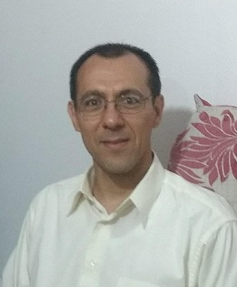

Think about the last time you were in contact with Nature. How did you feel? Disconnected from routine and problems? With more freedom? Accepted and welcome? Perhaps you also felt an invasion of curiosity, creativity and fascination. Multiple studies affirm that strengthening ties with Nature brings benefits for both mental and physical health. That's what "Ponds of Life" offers you: Frequent appointments with Nature and its benefits. On this page you will find information about our products: "Ponds", "Aquatic plants" and "Fish". "Ponds of Life", the daily recreation that your mind and body need.
About "Ponds of Life"
Since our foundation in 2022, "Ponds of Life" has been dedicated to complete customer satisfaction through understanding and personalized attention to their needs. For us, each new project means a new relationship. The information we acquire in our personalized attention allows us to provide excellent solutions. Contact us today and discover the advantages of working with us.
About Me
I have been an aquarist since the middle of 2020. Since I was a child I have always been attracted to nature and have studied and practiced various activities related to it (gardening, animal husbandry, camping, etc.). However, I had a pending subject, aquarism. Due to some prejudices that arose in my childhood (as a child I had an aquarium and my fish died) I did not have enough motivation to face an adventure like this. Finally, in the middle of the year 2020 the planets aligned. Due to the extra idle time (because of the government-imposed lockdown in the pandemic) and some saved money I had, I was able to dedicate myself to researching and experimenting enough to understand the natural fundamentals that govern a pond. This, added to other manual skills, allows me to carry out this project and offer you a complete product that will provide you with countless moments of entertainment and satisfaction. - David Galvan